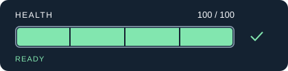
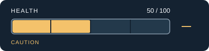
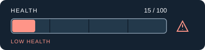
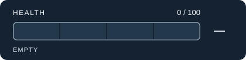

Original vector study · Thomas GeoffroyHealth without
colour guessing.
A small game HUD study: the fill, number and status all tell the same story. Low health adds a warning shape. These are original SVG assets, not screenshots from a game engine.

Full: 100% fill, explicit value and status.
Half: 50% fill, explicit value and status.
Low: 15% fill, explicit value and status.
Empty: 0% fill, explicit value and status.